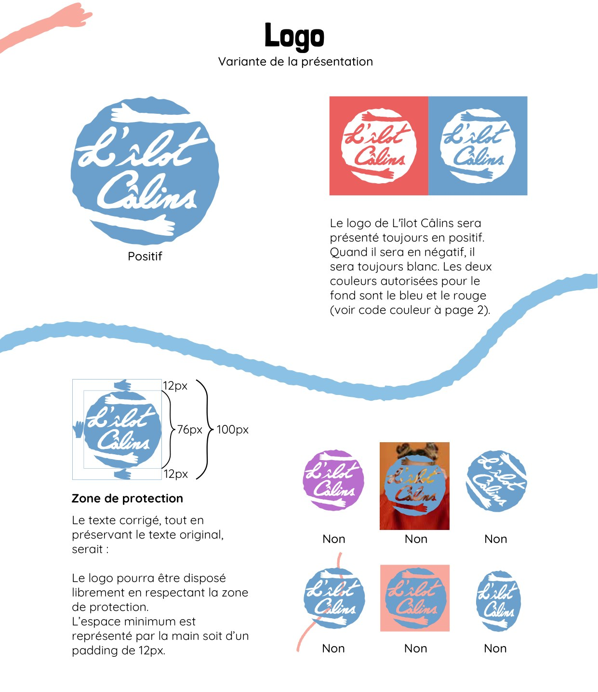
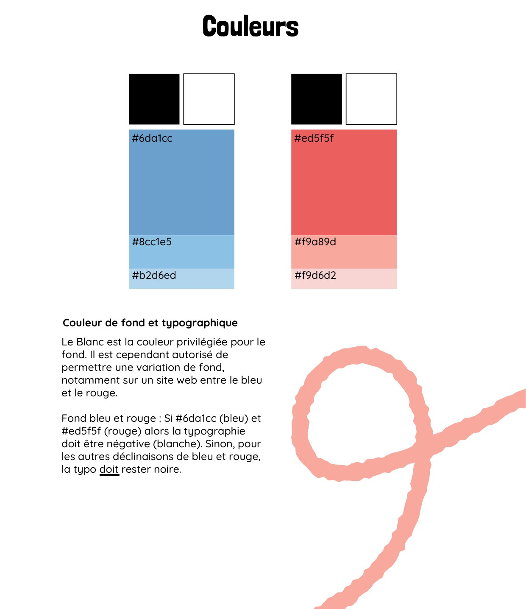
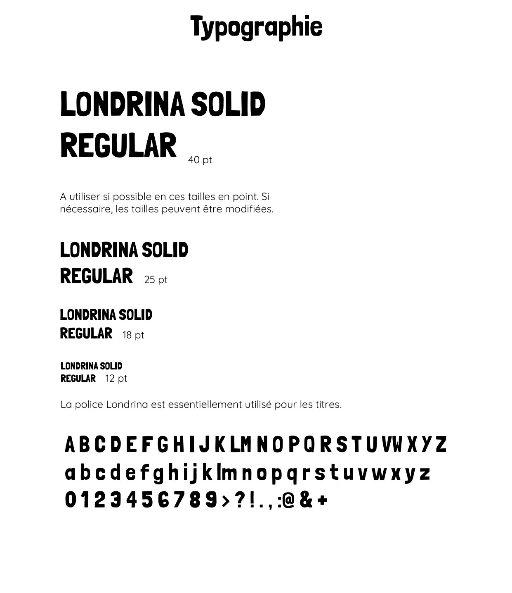
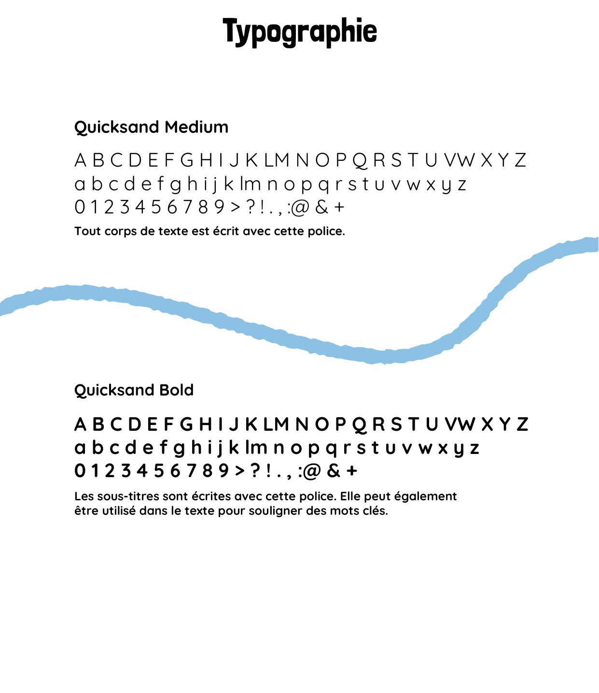
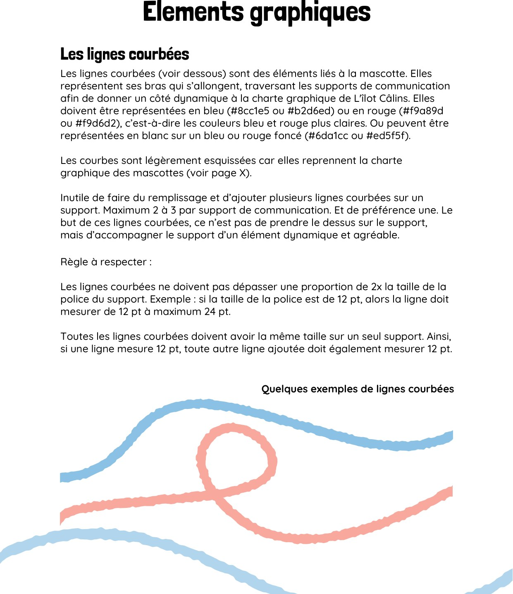
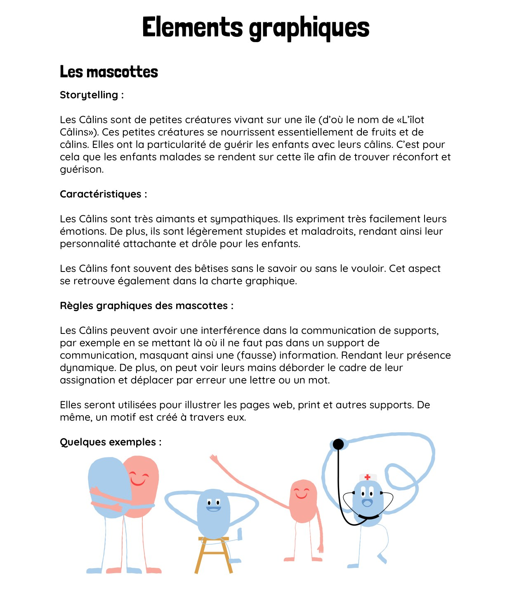

Identité visuelle — L'îlot Câlins
L'îlot Câlins — charte graphique et identité visuelle
Réalisation d'identité visuelle : construire l'ensemble des éléments graphiques d'une association jeunesse et en formaliser les règles d'usage dans une charte. Contrairement aux autres marques de ce portfolio, L'îlot Câlins est une association réelle ; la charte est présentée ici avec son autorisation.
Contexte
L'îlot Câlins est une association jeunesse bâtie autour d'un univers : une île et de petites créatures, les « Câlins ». Le travail a consisté à en formaliser toute l'identité visuelle — du logo aux règles d'application — dans une charte utilisable sur les supports web et print de l'association, en assurant la cohérence de l'ensemble.
Méthode
La charte a été construite élément par élément, chaque choix étant documenté et contraint :
- construction du logo — logotype manuscrit « L'îlot Câlins » inscrit dans un disque aux bords esquissés, prolongé par un bras qui l'enlace ;
- déclinaisons — présentation systématique du logo en positif, passage en blanc sur fond bleu ou rouge, et recensement des variantes interdites ;
- zone de protection — espace minimum de 12 px de chaque côté, soit un cadre de 100 px autour du logotype ;
- charte chromatique — un bleu et un rouge, chacun décliné en deux nuances claires, documentés en hexadécimal, avec les règles de fond et de typographie négative ;
- typographies — Londrina Solid Regular pour les titres, Quicksand Medium et Bold pour les textes et les sous-titres ;
- éléments graphiques — lignes courbées reprenant les bras des mascottes, avec une règle de proportion liée à la taille de la police ;
- mascottes — les « Câlins », personnages définis par un storytelling et par des règles de mise en scène (interférences, mains qui débordent le cadre).
Résultat
Les tableaux ci-dessous reprennent la palette et les typographies retenues dans la charte. Les valeurs proviennent du document source.
| Rôle | Couleur | Code hexadécimal |
|---|---|---|
| Couleur principale | Bleu | #6da1cc |
| Nuance claire | Bleu | #8cc1e5 |
| Nuance très claire | Bleu | #b2d6ed |
| Couleur principale | Rouge | #ed5f5f |
| Nuance claire | Rouge | #f9a89d |
| Nuance très claire | Rouge | #f9d6d2 |
Le blanc est la couleur de fond privilégiée. Sur le bleu ou le rouge principal, la typographie doit être négative (blanche) ; sur les nuances claires, elle reste noire.
| Usage | Police | Règle |
|---|---|---|
| Titres | Londrina Solid Regular | tailles de 40, 25, 18 et 12 pt |
| Textes | Quicksand Medium | tout corps de texte |
| Sous-titres | Quicksand Bold | sous-titres et mots-clés |






Ce que cela démontre
Conception d'une identité visuelle complète et d'une charte exploitable : construction et déclinaisons d'un logo, palette chromatique chiffrée, système typographique et éléments graphiques, réunis avec zones de protection, règles et contraintes d'application. Le tout adossé à un storytelling cohérent pour les mascottes.